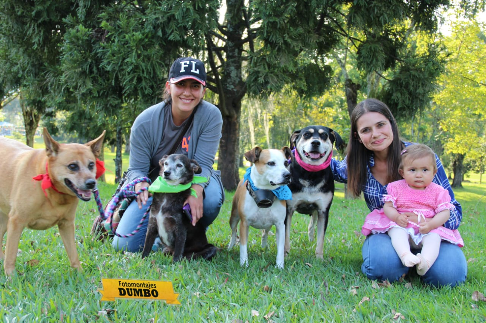
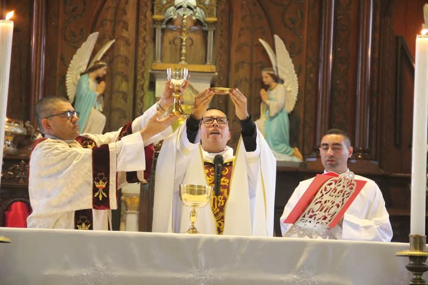

Servicios que ofrezco
- Sesiones personales y familiares
- Fotografía para empresas y productos
- Eventos especiales

Experiencia en la fotografía
Con una trayectoria de más de 28 años en la fotografía profesional, he trabajado para empresas y de manera independiente, cubriendo todo tipo de eventos en ciudades como Manizales, Medellín, Bogotá, Pereira, entre otras. Mi objetivo siempre ha sido capturar momentos únicos y convertirlos en recuerdos inolvidables.

Verlo desde otro ángulo
Mi objetivo es que cada persona que se ponga frente a mi cámara se sienta cómoda, segura y pueda ver reflejada su esencia en cada fotografía. Trabajo con dedicación en cada detalle: desde la luz, el ángulo y la composición, hasta la edición final, para asegurar un resultado profesional y memorable.